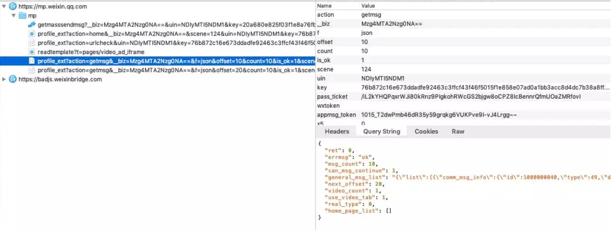
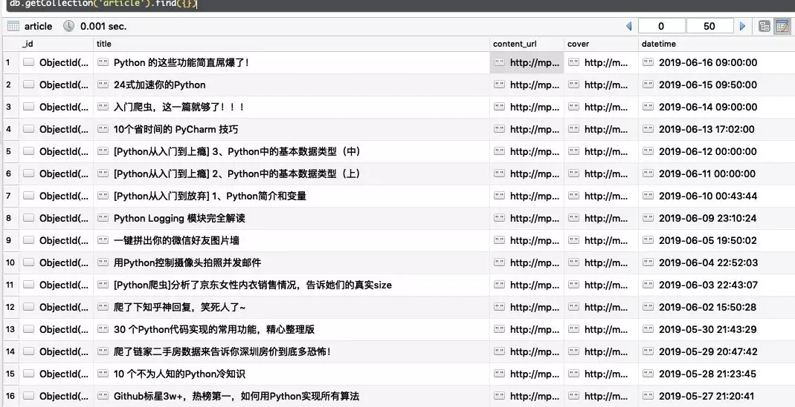

爬取公众号的方式常见的有两种
今天介绍一种通过抓包PC端微信的方式去获取公众号文章的方法。相比其他的方法非常方便。

如上图，通过抓包工具获取微信的网络信息请求，我们发现每次下拉刷新文章的时候都会请求 mp.weixin.qq.com/mp/profile_ext 这个接口。
经过多次测试分析，用到了以下几个参数
数据如下
{
"ret": 0,
"errmsg": "ok", # 请求状态
"msg_count": 10, # 信息条数
"can_msg_continue": 1, # 是否还可以继续获取，1代表可以。0代表不可以，也就是最后一页
"general_msg_list": "{"list":[]}", # 公众号文本信息
"next_offset": 20,
"video_count": 1,
"use_video_tab": 1,
"real_type": 0,
"home_page_list": []
}
部分代码如下
params = {
'__biz': biz,
'uin': uin,
'key': key,
'offset': offset,
'count': count,
'action': 'getmsg',
'f': 'json'
}
headers = {
'User-Agent': 'Mozilla/5.0 (Windows NT 10.0; Win64; x64) AppleWebKit/537.36 (KHTML, like Gecko) Chrome/74.0.3729.131 Safari/537.36'
}
response = requests.get(url=url, params=params, headers=headers)
resp_json = response.json()
if resp_json.get('errmsg') == 'ok':
resp_json = response.json()
# 是否还有分页数据， 用于判断return的值
can_msg_continue = resp_json['can_msg_continue']
# 当前分页文章数
msg_count = resp_json['msg_count']
general_msg_list = json.loads(resp_json['general_msg_list'])
list = general_msg_list.get('list')
print(list, "**************")最后打印的list就是公众号的文章信息详情。包括标题(titile)、摘要(digest)、文章地址(content_url)、阅读原文地址(source_url)、封面图(cover)、作者(author)等等...
输出结果如下：
[{
"comm_msg_info": {
"id": 1000000038,
"type": 49,
"datetime": 1560474000,
"fakeid": "3881067844",
"status": 2,
"content": ""
},
"app_msg_ext_info": {
"title": "入门爬虫，这一篇就够了！！！",
"digest": "入门爬虫，这一篇就够了！！！",
"content": "",
"fileid": 0,
"content_url": "http:XXXXXX",
"source_url": "",
"cover": "I5kME6BVXeLibZDUhsiaEYiaX7zOoibxa9sb4stIwrfuqID5ttmiaoVAFyxKF6IjOCyl22vg8n2NPv98ibow\\/0?wx_fmt=jpeg",
"subtype": 9,
"is_multi": 0,
"multi_app_msg_item_list": [],
"author": "Python3X",
"copyright_stat": 11,
"duration": 0,
"del_flag": 1,
"item_show_type": 0,
"audio_fileid": 0,
"play_url": "",
"malicious_title_reason_id": 0,
"malicious_content_type": 0
}
},{...},{...},{...},{...},{...},{...},{...},{...},{...}]获取数据之后，可以保存到数据库中，也可以将文章保存在PDF中。
# Mongo配置
conn = MongoClient('127.0.0.1', 27017)
db = conn.wx #连接wx数据库，没有则自动创建
mongo_wx = db.article #使用article集合，没有则自动创建
for i in list:
app_msg_ext_info = i['app_msg_ext_info']
# 标题
title = app_msg_ext_info['title']
# 文章地址
content_url = app_msg_ext_info['content_url']
# 封面图
cover = app_msg_ext_info['cover']
# 发布时间
datetime = i['comm_msg_info']['datetime']
datetime = time.strftime("%Y-%m-%d %H:%M:%S", time.localtime(datetime))
mongo_wx.insert({
'title': title,
'content_url': content_url,
'cover': cover,
'datetime': datetime
})结果如下
